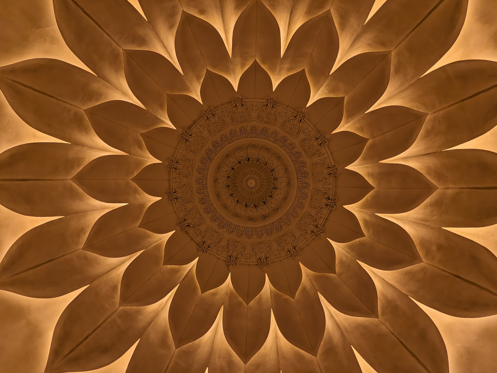
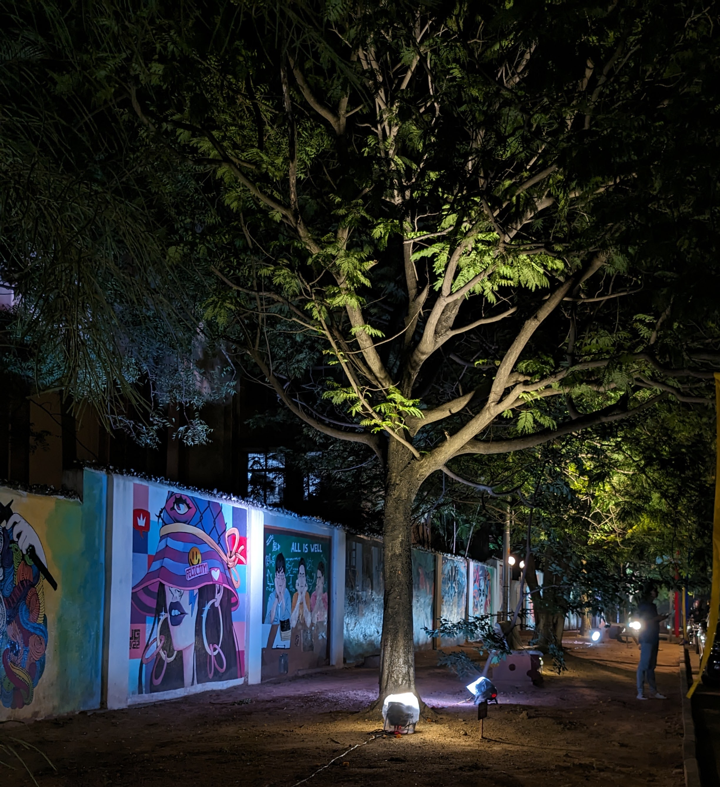

About Me
Hello! I'm Varun Shastry, a sophomore pursuing a dual degree (B.Tech + MS by Research) in Electronics and Communication Engineering (ECD) at IIIT Hyderabad. My interests lie in signal processing and mathematical topics related to probability theory and random processes. I also have experience designing basic VLSI circuits.
Outside academics, I am an avid chess player and passionate about photography (clicks to the right!). Recently, I’ve developed an interest in Formula 1! I also enjoy playing video games and traveling to different countries, immersing myself in diverse cultures and cuisines.

A Radiant floral ceiling design!
Shimmering and divine reflections
Mt. Fuji, Japan

Campus beauty under night lights!